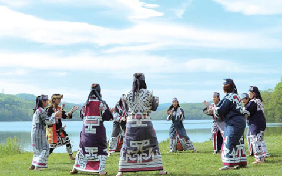

北海道のアイヌ踊りの体験
アイヌ踊
独特な唄と掛け声に合わせ、膝と手拍子でリズムを取りながら踊るアイヌ古式舞踊。 自然を尊び、共存してきたアイヌ民族の暮らしの中で生まれたアイヌの踊りは、 動物や自然、狩猟や遊び、喜びや哀しみなど、様々なものがあります。 アイヌにとっての舞踊は、自分たちが踊って楽しむだけではなく、祖先や神々（カムイ） に対し敬意や感謝を表す表現でもありました。 これらの踊りは地域によって「リムセ」 や「ウポポ」、「ホリッパ」といわれ、大勢で輪になって踊るものや、 少人数で神々への祈りを表したもの、豊漁猟を祈願するもの、 悪霊を追い払うためのものなど、さまざまな種類があります。 唄や踊りで、喜びや悲しみを表現することはアイヌにとって欠かせない大切なこと。 儀式の時や、親戚・友人が集まった時、あるいは仕事をしている最中など、 様々な場面で人々は唄い、踊ったといいます。